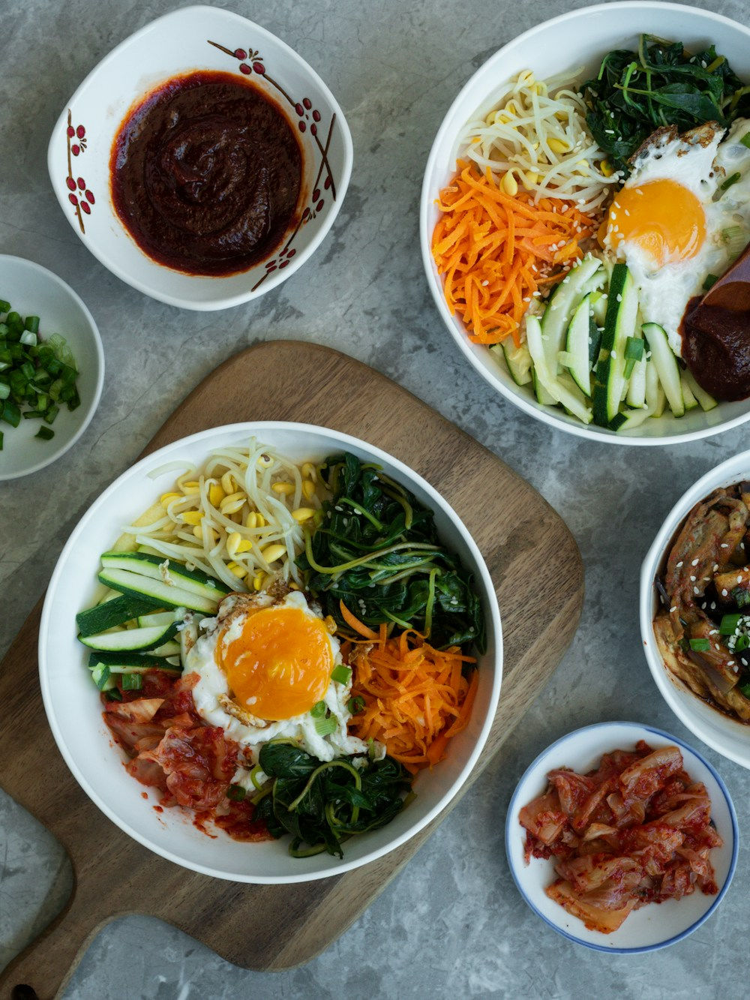

Una mesa · Muchas historias
El corazón de Seúl
El corazón de Seúl
en cada plato
Sabores que cruzan generaciones. Recetas tradicionales coreanas preparadas sin prisa, para disfrutarlas juntos.
Desliza para conocer

Desde
1998
서울
1998
서울
Nuestra cocina
Tradición que se siente en casa
Hansik significa “comida coreana”, pero para nosotros significa mucho más: es el olor del arroz recién hecho, el kimchi de la abuela y una mesa donde siempre cabe alguien más.
Seleccionamos ingredientes locales y fermentamos nuestras salsas en casa. Cada plato respeta su origen y, al mismo tiempo, cuenta nuestra historia en Madrid.
Nuestra filosofía